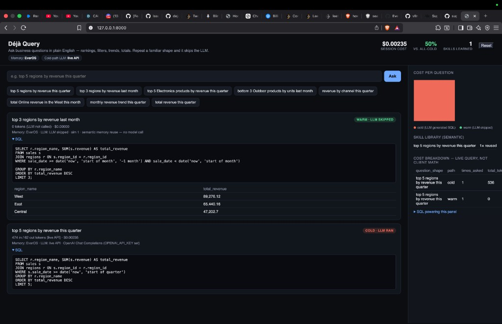
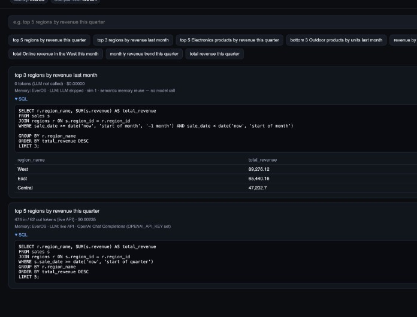
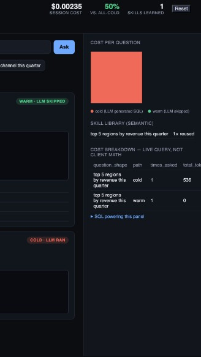

An agent that gets cheaper every time it’s already seen a question shaped like this one.
EverOS memory · Snowflake cost visibility · OpenAI cold path
OpenAI reasons over schema + question → full SQL. Store the solve as a skill.
EverOS finds a similar past question. Slot-fill N and time window. Skip the LLM.
Same intelligence. Fraction of the cost. Cheaper the longer it runs.
Cold once → warm forever after — badges, tokens, and savings in one screen.

Warm · 0 tokens · LLM skipped · Cold · live OpenAI · skill learned

Result cards: path badge, tokens, SQL, answer table

Cost chart · skill library · live SQL breakdown
tokens on the warm path — no hidden second LLM call.
Conservative matching: borderline similarity stays cold. Filters and ranking direction must agree.
agent_cost_log)One analyst’s cold solve becomes warm for the whole company — shared EverOS skill library across teams.
Support tickets, ops runbooks, code-fix patterns, RAG workflows — reuse solved reasoning, not just queries.
Real Snowflake / Cortex for data + cost log; multi-schema catalogs; dialect-aware templates.
Finance close, retail merchandising, healthcare ops, SaaS metrics — each domain learns its own question shapes.
Policy checks on warm reuse, audit trails of which skill answered whom, and cost budgets per shape.
Déjà Query — Warm Path
Repo → github.com/shahtirth07/dejaquery · Run → ./run_local.sh